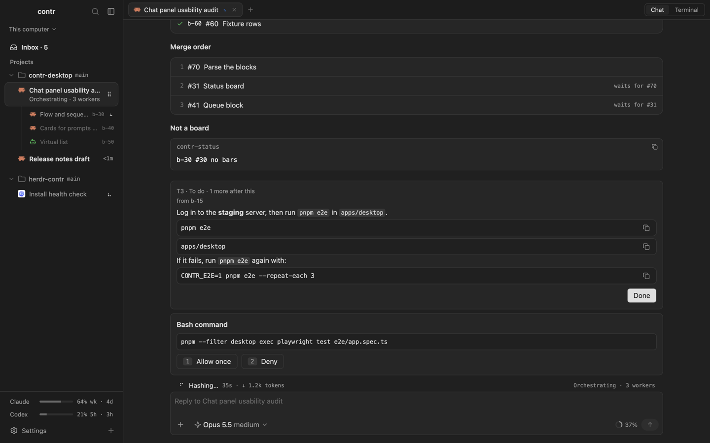
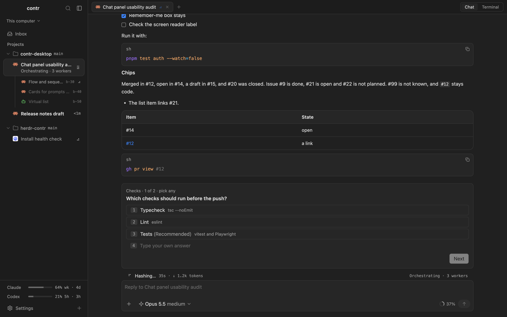
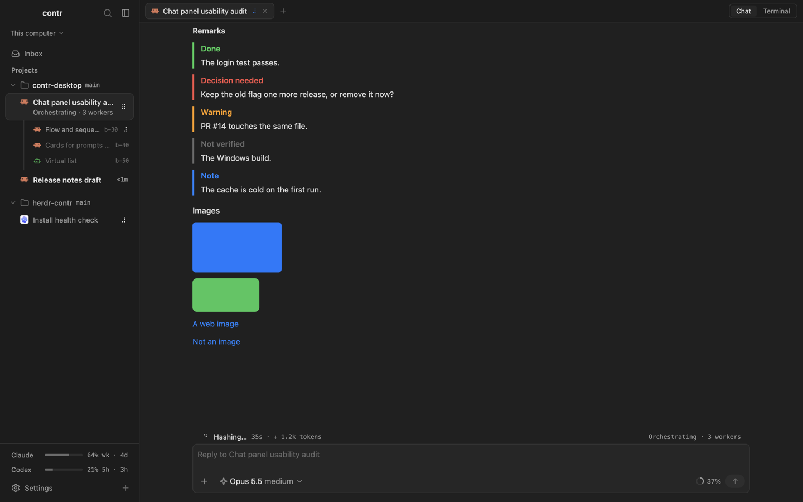
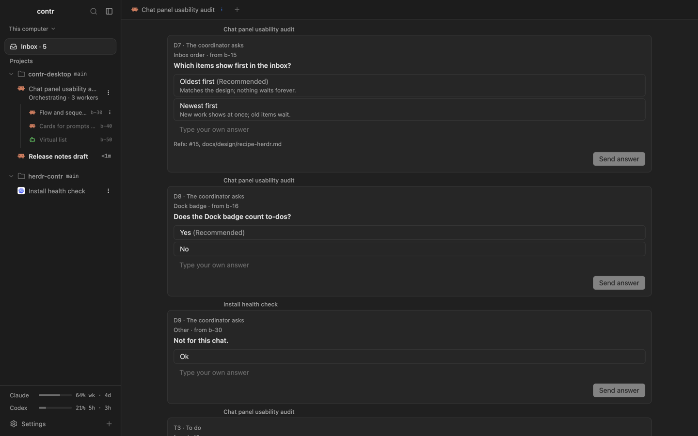
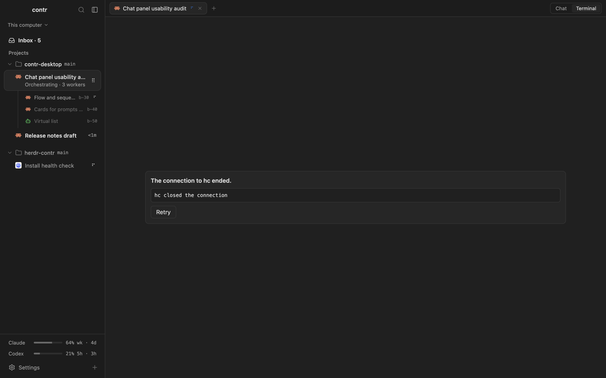
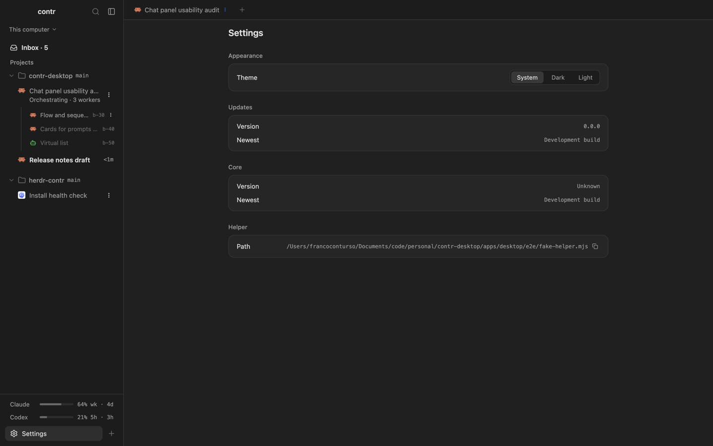

contr, every screen: Herdr layout, contr tokens
Six screens of the app on main (d4bcc2b), shot today with the fake helper, hc and orchestration tool. Under each one is its redesign, made the way the chat screen you approved was made: Herdr's layout, and the contr design system's colors, type, glyphs and question card. All the redesigns use the same fake data as the screenshots, so you can compare them line by line.
1 Chat: board, merge order, a to-do and a permission
- Board: each worker gets a status mark instead of a colored dot or a check; only the coordinator's own wait is red.
- Merge order: plain rows with hairlines, not a boxed table.
- To-do: one line with Show and Done; Show opens its three commands, each a row with Copy. The full to-do is in the Inbox too.
- Permission: it moves to the question card above the reply box, with keys 1 and 2.
- Status line: the glyph, "Hashing…" and the tokens on the left; "Orchestrating · 3 workers" on the right.
Now

Proposed
2 Chat: a question with several answers
- Question card: the same card as the permission. Check boxes for "pick any", the recommended answer first, the keys line, and Next.
- Code and tables: hairline frames; the language label stays; issue and PR numbers are mono text in the brightest ink.
Now

Proposed
3 Chat: remarks and images
- Remarks: a label column and the text, no colored bars (the design system forbids left-border cards and accent colors). "Decision needed" is the only red label, because it waits for you.
- Images and links: a hairline frame on images; links in the brightest ink with a quiet underline.
Now

Proposed
4 Inbox
- A list: one row per item, oldest first, with its kind, id, text, where it is from, and the agent it belongs to.
- One open item: the first item opens as the question card; the others stay one line each until you go to them.
- Waiting agent: the agent's own prompt is a row too, with the red mark.
Now

Proposed
5 Terminal
- The terminal is the work: it fills the area under the tab bar with no frame, in JetBrains Mono 13/20.
- When hc ends: one centered note with the reason and Retry, not a boxed card. The screenshot shows this state, because the test app has no hc.
- The terminal text in the redesign is an example.
Now

Proposed
Proposed, when hc ends
6 Settings, with the health check (#177)
- Rows, not boxes: label on the left, value on the right in mono, hairlines between rows.
- Health check: a new group from #177. It lists hc core, the helper, the orchestration tool, agents.json, the Claude Code kit and gh, each with what it found. A failure is the only red text. These rows are an example: #177 needs a check command in contr-core first.
Now

Proposed